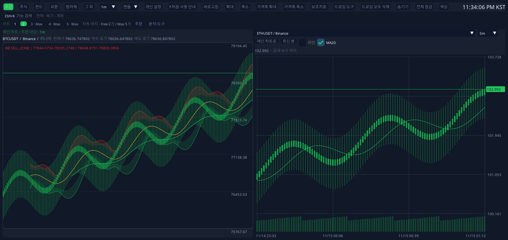
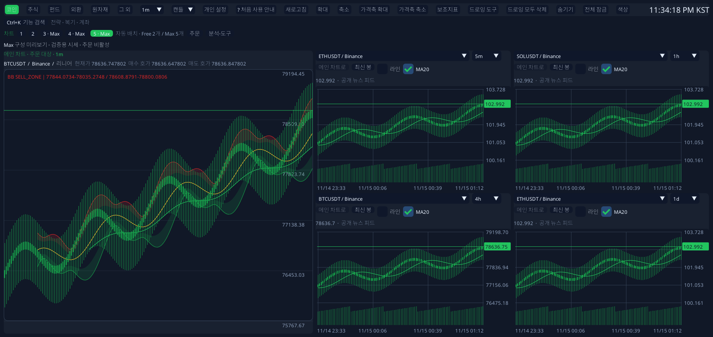

01 — ANALYZE
시장을 보는 시야를 넓히세요.
종목과 시간 주기를 독립적인 차트로 비교하세요. 메인 차트에서는 기술 지표와 드로잉 도구, AI 보조 분석을 함께 사용할 수 있습니다.
PAPER TRADING FOR WINDOWS
차트에서 주문을 계획하고 가상 자금으로 연습하세요. 거래 일지에서 그때의 결정을 돌아볼 수 있습니다.
무료로 시작 · Windows x64 · 29.78 MB

TradingDeskPro 1.9.0의 모의 주문창과 완료 거래 리플레이를 살펴보세요. 일치하는 차트 기록이 있는 경우 PLUS와 Max에서 리플레이를 사용할 수 있습니다.
45초 · 모의 데이터로 촬영한 실제 Windows 앱 화면 · 영문 자막
01 / BUILT AROUND YOUR PROCESS
시장을 관찰하고, 전략을 연습하고, 결정을 돌아보는 일.
필요한 도구를 한곳에 모아 생각의 흐름을 이어갑니다.
종목과 시간 주기를 독립적인 차트로 비교하세요. 메인 차트에서는 기술 지표와 드로잉 도구, AI 보조 분석을 함께 사용할 수 있습니다.
가상 자금으로 거래하고, 전략을 백테스트하고, 과거 시장을 리플레이하세요. Max에서는 AI 모의 자동매매도 사용할 수 있습니다.
모의 거래에는 가상 자금을 사용합니다.거래 일지와 성과를 복기하고 CSV로 기록을 가져오거나 내보내세요. 로컬 백업을 기본으로, Max에서는 일지와 분석 진행 상황을 클라우드에 보관할 수 있습니다.
02 / A LITTLE MORE PERSPECTIVE
Free는 두 개, PLUS는 네 개, Max는 다섯 개.
화면 크기에 맞춰 앱이 배치를 조정하므로
시장의 흐름에 집중할 수 있습니다.

큰 메인 차트 옆에 4개의 비교 차트. 넓은 화면을 더 풍부하게 활용하세요.
1.2.0에서 캡처한 배치이며 1.9.0에서도 유지됩니다. 격리된 모의 시세를 사용했고 주문은 비활성화되어 있습니다. 메인 차트가 주문 대상이며 비교 차트는 별도 자동매매를 실행하지 않습니다. 배치는 창 크기에 따라 달라집니다.
03 / YOUR TOOLS, CONNECTED
앱 설정에서 지원하는 거래 API를 연결하세요.
암호화폐 수동 API 거래는 Free, 증권·FX 연결은 Max에서 사용할 수 있습니다.
1.9.0 어댑터 카탈로그 기준입니다. 제공자 승인, 지역·계좌 권한과 게이트웨이 요건이 적용됩니다. API 연결이 주문 접수나 체결을 보장하지는 않습니다.
50개 언어 지원. Windows 표시 언어 자동 감지와 수동 언어 선택.
다크·라이트·사용자 색상과 할로윈·크리스마스 등 5가지 시즌 스킨.
04 / CHOOSE YOUR WORKSPACE
로컬에서 시작
무료로 시작하기분석과 복기를 위한 플랜
계정에서 플랜 선택PLUS와 확장된 연결 기능
계정에서 플랜 선택유료 플랜은 취소할 때까지 매월 자동 갱신되며 이미 결제한 기간은 유지됩니다. 구독은 일반판에서 이용하세요. 구독은 별도 Trial의 10일 제한을 연장하지 않습니다. PLUS는 앱 1.7.0 이상에서 지원합니다.
AI 자동매매에는 모의 자금을 사용합니다. 실계좌 AI 제안은 두 번의 경고 확인과 매 주문의 최종 승인이 필요합니다.
05 / A FEW THINGS TO KNOW
다운로드 전에 궁금한 것들.
새 프로필은 스캘퍼/데이, 스윙/인베스터, 퀀트/백테스터 중에서 선택할 수 있습니다. 작업공간에서 모드를 바꾸고 전체 도구로 모든 기능을 다시 표시하세요. 기존 프로필의 화면은 유지됩니다. 프리셋은 플랜 제한을 바꾸거나 주문을 활성화하지 않습니다.
이곳은 제품 소개 웹사이트입니다. TradingDeskPro 1.9.0은 Windows x64용 네이티브 데스크톱 앱으로, 차트·모의 거래·지원 API 연결은 앱에서 사용합니다.
네. 차트 분석과 가상 자금 모의 거래로 시작할 수 있습니다. 실계좌 API 연결은 별도로 설정하고 활성화하는 기능입니다. 시세 제공 범위는 제공자에 따라 다릅니다.
Max의 자동 실행은 모의 거래입니다. 실계좌 AI 보조 기능은 두 차례의 별도 경고 확인 후, 매 주문마다 내용을 검토하고 직접 전송해야 합니다. 제공자의 주문 접수 응답은 체결과 다릅니다.
일반판 실행 파일은 29.78 MB입니다. 거래 API 실행에 필요한 선택 구성 요소는 연결 설정에서 필요할 때 설치합니다(다운로드 약 36 MB, 설치 후 약 94 MB). Node나 Python을 직접 설치할 필요는 없습니다.
Free를 계속 사용하거나 PLUS·Max를 구독하려면 일반판을 사용하세요. 별도 Trial은 첫 실행부터 10일 제한이 있으며, 업데이트는 기존 사용 기간을 유지합니다. Max 결제로 Trial 기간이 연장되지는 않습니다.
YOUR NEXT SESSION STARTS HERE
TradingDeskPro 1.9.0 Stable · Windows x64
앱 실행 파일에는 Authenticode 서명이 없습니다. 업데이트 피드 서명은 릴리스 무결성을 별도로 검증합니다.